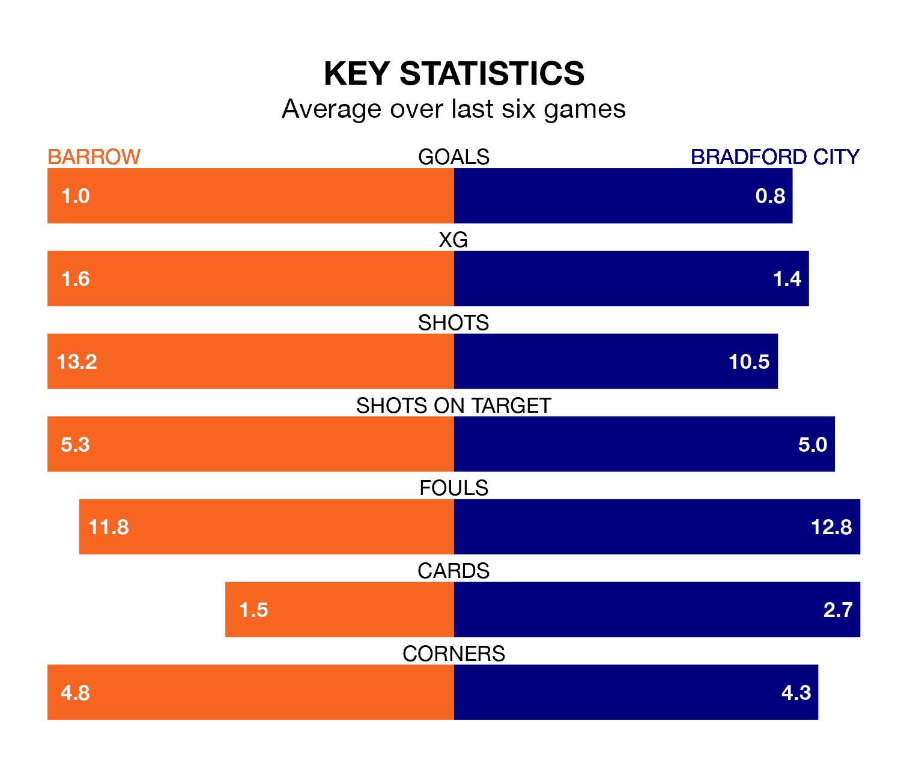

Barrow host Bradford City on Tuesday at the SO Legal Stadium in EFL League Two.
In their last league match, on Saturday, Barrow lost to Swindon Town 2-0 at home.
Bradford won, 1-0 at home against Gillingham, with Brad Halliday scoring their goals.
In the last 10 years, Barrow and Bradford have played each other on seven occasions. Barrow won four of them, Bradford two, and they drew once.
On average, the Bluebirds scored 1.4 goals and the Bantams 1.1 in those matches.
Their last meeting was on November 11, when Barrow won 2-1 away.
With Paul Farman between the sticks, Barrow can rely on one of the league's safest pair of hands. He has kept 14 clean sheets in his 39 appearances this season, and only two other 'keepers – Stockport County's Ben Hinchiffe and AFC Wimbledon's Alex Bass – have been able to prevent the opposition scoring on more occasions in EFL League Two.
In Bradford's net, Harry Lewis has eight clean sheets in 26 games. He has conceded a goal every 73 minutes, 20% more often than the 84 minutes between goals for Farman.
The Bluebirds are fifth in the table after 41 games, of which they have won 18 and drawn 13, earning 67 points.
City are nine places behind the home side in 14th, with 15 wins and 12 draws putting them on 57 points.
With 50 goals in 42 games so far this season, the Bantams are the league's third-lowest scorers with 1.2 goals per game. But they are conceding fewer than average too, letting in 54 goals at a rate of 1.3 per game.
Barrow are also below average scorers, with 1.4 goals per game, compared to a league average of 1.5. They have conceded 1.1 goals per game.
Barrow are in mixed form in EFL League Two, with two wins and two draws from their last six games.
With two wins and a draw over that period, the visitors' form is slightly worse – they have taken seven points from 18, compared to the Bluebirds' eight.
Tuesday's match will be refereed by Ross Joyce, who has taken charge of 13 EFL League Two games so far this season, issuing five red cards and booking 64 players. He has awarded two penalties.
The last Bradford game Joyce refereed was the 0-0 draw at home against AFC Wimbledon on February 3. He is yet to oversee a match featuring Barrow this season.
Updated: 11:20 (UTC), 09/04/24